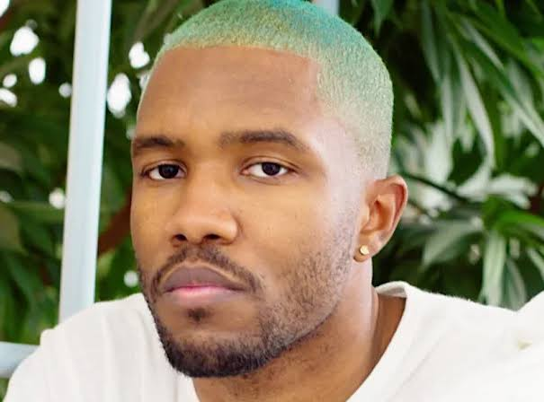

Cantor · compositor · artista
Frank Ocean
Uma voz que transforma lembranças, desejo e silêncio em canções que parecem um mundo inteiro.
Entre o calor de channel ORANGE e a paisagem íntima de Blonde, Frank Ocean construiu uma obra própria — cuidadosa, inventiva e feita no tempo dele.
De New Orleans para o mundo
Quem é Frank Ocean?

Frank Ocean nasceu em Long Beach, na Califórnia, e cresceu em New Orleans, cidade cuja riqueza musical aparece como uma das raízes de sua sensibilidade artística. Depois do furacão Katrina, mudou-se para Los Angeles e começou a trabalhar como compositor, antes de se firmar também como intérprete.
No início da carreira, aproximou-se do coletivo de hip-hop Odd Future. Em 2011, chamou atenção com a mixtape nostalgia, ULTRA.; no ano seguinte, lançou channel ORANGE, seu álbum de estreia em estúdio. A partir daí, passou a ser reconhecido por uma escrita pessoal e por escolhas sonoras que cruzam gêneros.
Além de cantar, participa da composição e da produção de sua música. Seus discos são construídos com cuidado nos detalhes: mudanças de ritmo, vozes em camadas, imagens poéticas e histórias que nem sempre se explicam por completo.
Capítulos no tempo dele
Uma trajetória fora de linha reta
Mais do que uma sequência de lançamentos, cada etapa abre uma nova porta para o universo de Frank.
Uma mudança de rota
Após o furacão Katrina, segue para Los Angeles. Lá, começa a construir sua carreira como compositor e a se aproximar da indústria musical.
nostalgia, ULTRA.
A mixtape independente apresenta sua voz como artista solo. “Novacane” e “Swim Good” ajudam a levar suas canções a um público maior.
channel ORANGE e o reconhecimento
O álbum de estreia em estúdio recebe aclamação e leva Frank a vencer dois Grammys, incluindo o prêmio de Melhor Álbum de Música Urbana Contemporânea.
Endless e Blonde
Em dois dias consecutivos, lança o projeto visual Endless e o segundo álbum de estúdio, Blonde — duas obras com linguagens próprias.
- 2017–2020
Canções lançadas fora dos álbuns
“Chanel”, “Provider”, “Moon River”, “DHL”, “In My Room”, “Dear April” e “Cayendo” ampliam esse período com novas texturas e formatos.
- 2025–2026
Novos caminhos no cinema
Em 2025, publicações especializadas noticiaram o início das filmagens de seu primeiro longa como diretor, com David Jonsson no elenco. Uma base da indústria registrou o projeto, de título de trabalho Philly, como concluído em outubro de 2026; a data de estreia não foi divulgada.
Quatro projetos essenciais
A discografia
Mixtape, álbum de estúdio e obra visual: cada projeto tem seu próprio clima e seu próprio jeito de contar.
 2011 · mixtape
2011 · mixtapenostalgia, ULTRA.
O primeiro grande retrato de Frank como artista solo: memórias, desejo e referências inesperadas em uma mixtape que circulou de forma independente.
Para começar: “Novacane” · “Swim Good” 2012 · álbum de estúdio
2012 · álbum de estúdiochannel ORANGE
Uma estreia ambiciosa que mistura soul, R&B e narrativa. As histórias do disco passam por amor, consumo, família e solidão.
Para começar: “Thinkin Bout You” · “Pyramids” · “Bad Religion” 2016 · álbum visual
2016 · álbum visualEndless
Som e imagem se encontram em um filme musical experimental, acompanhado pelo trabalho de Frank construindo uma escada em espiral.
Para começar: “At Your Best (You Are Love)” · “Rushes” · “Higgs” 2016 · segundo álbum de estúdio
2016 · segundo álbum de estúdioBlonde
Um álbum de atmosfera minimalista, vozes próximas e lembranças fragmentadas. A produção abre espaço para que cada detalhe respire.
Para começar: “Nikes” · “Ivy” · “Nights” · “White Ferrari”Os lançamentos oficiais e as datas podem ser conferidos no perfil de Frank Ocean no Apple Music.
Abrir a página dos álbunsUm cantinho só para o favorito dela
Blonde, para ouvir com o coração
Porque esse é o álbum favorito dela, esta parte da página foi feita para morar um pouco mais nesse universo.
♫ 17 faixas
◷ 1 hora e 1 minuto
✦ 20 de agosto de 2016
Blonde parece uma coleção de lembranças: algumas chegam nítidas, outras ficam pela metade. As harmonias delicadas, os silêncios e as mudanças de textura fazem cada faixa parecer próxima, como se a gente estivesse ouvindo um pensamento nascer.
O disco passa por amor, saudade, juventude e passagem do tempo sem fechar todas as respostas. Por isso, cada pessoa encontra um pedacinho próprio nele — e o dela já tem um lugar especial nesta página.
Uma forma de ouvir: do começo ao fim, sem pressa. “Nights” abre uma nova paisagem no meio do álbum; “White Ferrari”, “Seigfried”, “Godspeed” e “Futura Free” levam a escuta até o seu encerramento.
O álbum, faixa por faixa
A edição digital tem 17 músicas.
- 01Nikes
- 02Ivy
- 03Pink + White
- 04Be Yourself
- 05Solo
- 06Skyline To
- 07Self Control
- 08Good Guy
- 09Nights
- 10Solo (Reprise)
- 11Pretty Sweet
- 12Facebook Story
- 13Close to You
- 14White Ferrari
- 15Seigfried
- 16Godspeed
- 17Futura Free
O que ele escolhe para tocar
As seleções musicais de Frank
Além das próprias canções, Frank compartilhou músicas que ama e apresentou seleções e conversas no blonded RADIO.
Escolhas pessoais · Boys Don’t Cry · 2016
50 músicas favoritas do Frank
Uma lista publicada junto à revista que acompanhou Blonde. As escolhas atravessam soul, pop, R&B, rock e muitas outras sonoridades — de Nina Simone, Stevie Wonder e D’Angelo a James Blake, Daft Punk e The Cure.
Ver e ouvir a seleção completablonded RADIO
Um programa de rádio criado e conduzido por Frank com colaboradores, entre eles Vegyn, Roof Access e Federico Aliprandi. As seleções misturam épocas e estilos; os episódios também receberam estreias de músicas e conversas especiais.
01blonded 001fev. 2017
02blonded 002mar. 2017
03blonded 003abr. 2017
04blonded 004abr. 2017
05blonded 005abr. 2017
06blonded 006mai. 2017
07blonded 007ago. 2017
08Los Santos 97.8 FMGTA V · 2017
09Midterms · parte Inov. 2018
10Midterms · parte IInov. 2018
11Midterms · parte IIInov. 2018
12blonded Xmasdez. 2018
13blonded 008out. 2019
14blonded 009nov. 2019
15blonded 10nov. 2019
16blonded Xmasdez. 2019
17blonded Xmasdez. 2021
18Lucy in the Sky with Diamondsjul. 2022
19blonded ENERGY!jul. 2022
Um projeto ligado à HOMER
Ver episódios no Apple Music
HOMER Radio
Uma janela para a música que toca no escritório da marca depois do expediente. O catálogo traz episódios com DJs convidados; é um universo relacionado ao Frank, mas as seleções são apresentadas por diferentes artistas.
As 50 favoritas foram apresentadas como escolhas pessoais de Frank. Já as seleções de rádio foram feitas por Frank e colaboradores; o arquivo externo reúne os tracklists completos de cada episódio.
Uma porta de entrada
Músicas para conhecer a obra
Uma seleção de faixas queridas pelos fãs, sem ordem definitiva — cada uma mostra uma faceta diferente do artista.
Thinkin Bout You
Uma canção de amor direta e vulnerável, que apresentou seu falsete a muita gente.
Pyramids
Uma composição longa que muda de cenário e de andamento no meio do caminho.
Pink + White
Uma faixa luminosa de Blonde, com participação vocal de Beyoncé.
Nights
Conhecida pela virada marcante que divide a música em duas atmosferas.
Self Control
Uma lembrança de amor que cresce com harmonias e vozes sobrepostas.
Chanel
Single de 2017 construído em torno de perspectivas que se refletem.
Moon River
Uma releitura delicada do clássico, lançada em 2018.
Dear April · Cayendo
Duas canções de 2020 que chegaram em versões acústicas e remixes.
Ivy
Uma lembrança íntima de juventude, amor e do que permanece depois.
Conhecer a históriaPyramids
Uma narrativa épica que cruza o Egito antigo e a noite contemporânea.
Conhecer a históriaSom, imagem e independência
O universo além das canções
Um espaço criativo próprio
Blonded aparece em seus lançamentos, projetos e transmissões de rádio. O site oficial reúne esse universo visual e musical.
Visitar BlondedUma revista feita para acompanhar Blonde
O projeto de 2016 expandiu o álbum para além do áudio, com uma publicação impressa de fotografia, entrevistas e referências artísticas.
Design e joalheria
Em 2021, Frank apresentou a Homer, sua marca independente de joias e acessórios, ampliando sua atuação para o design.
Conhecer HomerUma voz sobre amor e identidade
Em 2012, antes do lançamento de channel ORANGE, publicou uma carta pessoal sobre ter se apaixonado por um homem. O gesto abriu conversas importantes sobre afeto e representatividade na música.
2Grammys
Reconhecimento
Uma obra que deixou marca
A Recording Academy registra duas vitórias e sete indicações para Frank Ocean. Entre os prêmios estão Melhor Álbum de Música Urbana Contemporânea, por channel ORANGE, e Melhor Colaboração Rap/Cantada, por “No Church in the Wild”.
Ver o histórico oficial do Grammy